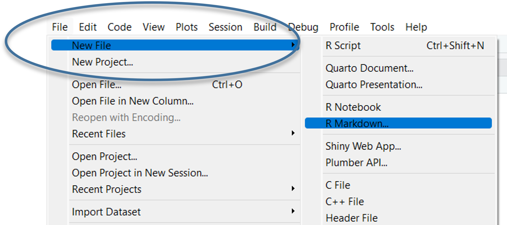
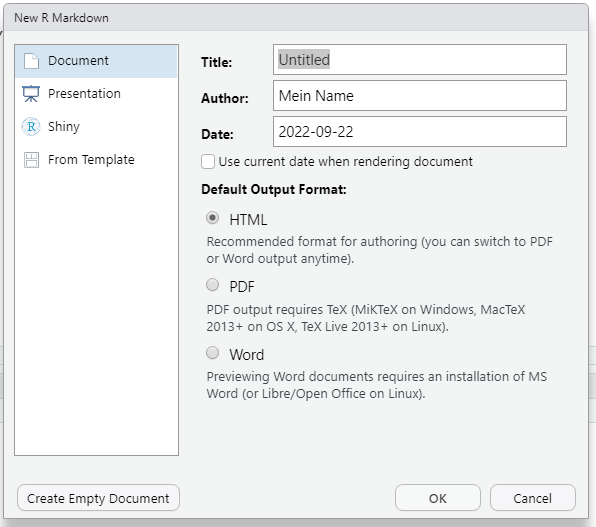
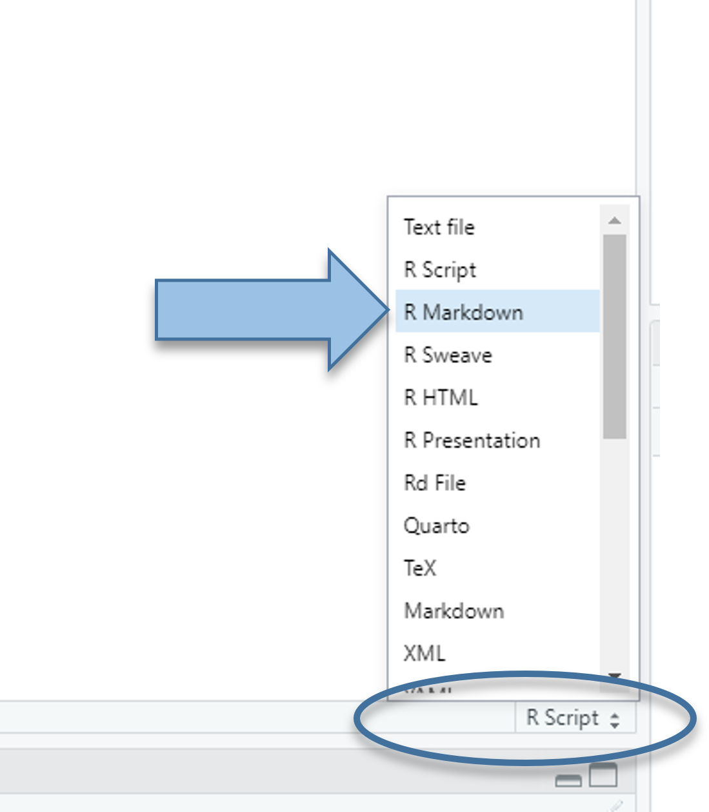
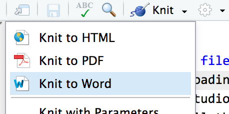
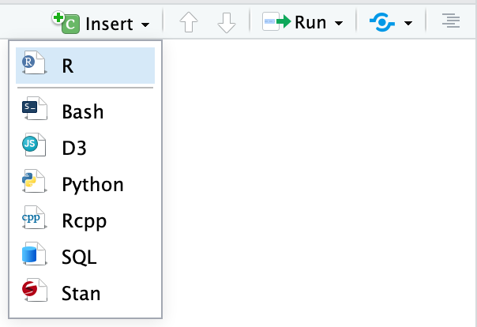
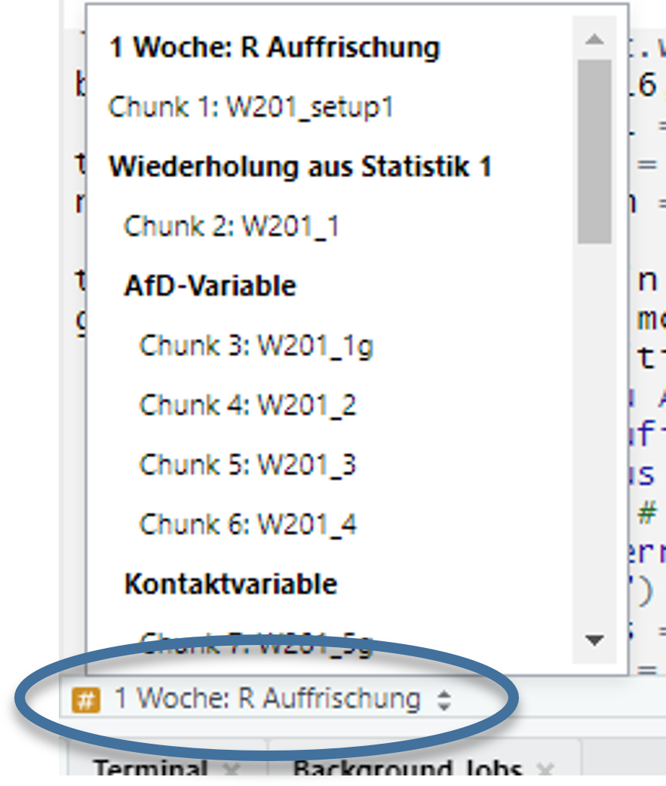
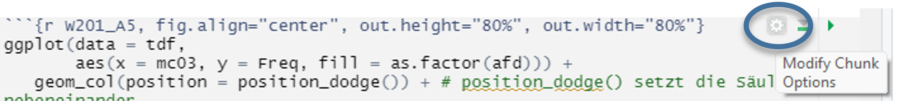
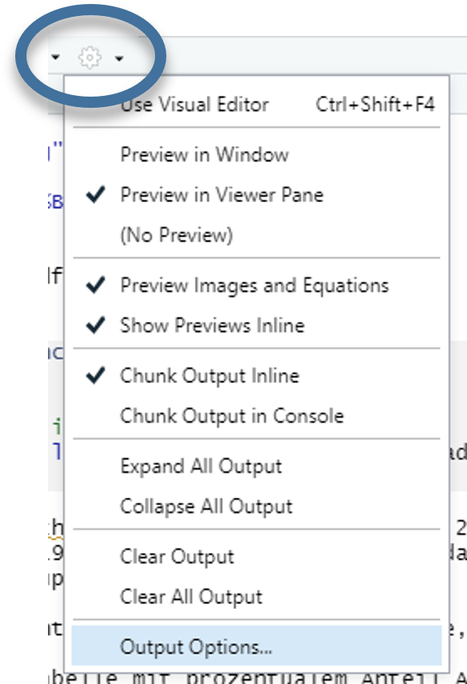

14 RMarkdown
{rmarkdown} erlaubt, formatierte Textelemente mit Markdown und R code bzw. Output zu kombinieren. Anders als ein R Script enthält ein RMarkdown-Dokument nicht nur Befehle, sondern auch Text - welcher mit Hilfe von Markdown-Befehlen formatiert werden kann. So können Grafiken, Tabellen, usw. direkt und zeitgleich mit dem Begleittext erstellt werden. Mit R Markdown können wir HTML, PDF, Word Dokumente, PowerPoint und HTML Präsentationen, Webseiten und Bücher erstellen. Diese gesamte Webseite wurde mit {R Markdown} bzw. dem verwandten Paket {Quarto} erstellt.
Dieses Kapitel kann lediglich eine kleine Einführung in RMarkdown sein. Die Hilfeseiten und Dokumentation für R Markdown ist extrem umfangreich und auch die Tutorials und Cheatsheets sind hervorragend. Daher hier nur eine kleiner Überblick.
Ein RMarkdown-Dokument sieht in seiner Grundform ungefähr so aus:
---
title: "Mein erstes RMarkdown-Dokument"
author: "Mein Name"
date: "2022-09-11"
output: pdf_document
---
# Überschrift 1
## Unterüberschrift 2
Dies ist ein R Markdown-Dokument.
Markdown ist eine einfache Syntax für die Erstellung von HTML-, PDF- und MS Word-Dokumenten.
Text kann **fett** und *kursiv* geschrieben werden.
Wenn wir auf die Schaltfläche **Knit** klicken, wird ein Dokument erstellt.
Das sowohl den Inhalt als auch die Ausgabe aller eingebetteten R-Code-Bausteine innerhalb des Dokuments enthält.
Ein R-Code-Baustein ("chunk") sieht so aus:
```{r cars}
# hier kommt der R Code hin
summary(mtcars$qsec)
```14.1 RMarkdown Dokument einrichten
Ein RMarkdown-Dokument können wir entweder einrichten, indem wir über das Menü File -> R Markdown… das Einrichtungsmenü aufrufen. Hier können wir den Titel, Autorennamen und das Datum sowie das Output-Format angeben:


Alternativ können wir auch rechts unten ein R Skript in RMarkdown-Dokument umformatieren:

RMarkdown-Dateien haben die Dateiendung .rmd. Das Knitten einer RMarkdown-Datei findet in einer neuen Umgebung statt - d.h. hier müssen alle Pakete und Daten geladen werden, auch wenn Sie in der Session bereits geladen sind.
14.2 Wichtige Begriffe
Chunk: Abschnitt mit R-Code innerhalb eines RMarkdown-Dokuments.
```{r} # hier kommt der R Code hin ```
Vor und nach dem Chunk muss eine Leerzeile stehen. Die letzten drei Backticks müssen alleine in der letzten Zeile eines chunks stehen.
- Knit: Beim “knitten” eines RMarkdown Dokuments, werden zuerst alle chunks ausgeführt und der jeweilige Output in Markdown konvertiert. Im Anschluss ruft R pandoc auf um, den Markdown-Text in HTML, PDF oder Word zu konvertieren.
Knitten kann entweder über das “Knit”-Symbol oben im Editor mit der Tastenkombination ⌘⇧K auf macOS oder STRG + ⇧ + k in Windows

14.3 Chunks einfügen
Wir können neue chunks auf zwei Arten erstellen
Mit
⌘⌥Iauf macOS oderSTRG + alt + Iauf Windows-Rechnern. Funktioniert auch, um einen existierenden chunck in zwei Teile zu teilen.Mit dem “Insert” Button oben im Editor:

14.4 Namen für chunks
Wir können den Abschnitten Namen hinzufügen, um die Navigation innerhalb des Dokument zu erleichtern. Wenn wir in RStudio auf das kleine Dropdown-Menü (mit dem #) am unteren Rand des Editors klicken, bekommen wir ein Inhaltsverzeichnis, das alle Überschriften und Abschnitte anzeigt. Wenn wir die Abschnitte benennen, werden sie in der Liste angezeigt. Wenn Sie keinen Namen angeben, wird der Chunk trotzdem angezeigt, aber Sie wissen nicht, was er tut.

Namen werden direkt nach dem {r in der ersten Zeile des chunks angegeben. Leerzeichen sind in chunk-Namen nicht erlaubt, aber Unterstriche und Bindestriche. Jeder chunk-Name darf innerhalb eines Dokuments nur einmal vergeben werden.
```{r chunk_Name}
# R Code
```14.5 Chunk-Optionen
Wir haben eine Reihe an Möglichkeiten festzulegen, wie RMarkdown mit Chunks umgehen soll. Eine vollständige Übersicht findest sich im RMarkdown Reference Guide oder auf der Webseite von knitr.
Optionen werden in der ersten Zeile eines chunks nach dem {r} festgelegt:
```{r name-of-this-chunk, warning=FALSE, message=FALSE}
# Code goes here
```Hier eine kleine Liste der wichtigsten Optionen:
fig.width=5&fig.height=4: Größe von Plotsecho=FALSE: Der chunk wird zwar ausgeführt und das Ergebnis im Zieldokument gezeigt, nicht aber der Codeinclude=FALSE: Der chunk wird zwar ausgeführt, aber im Zieldokument werden weder der Code selbst noch das Ergebnis gezeigteval=FALSE: Der chunk wird nicht ausgeführt, aber im Zieldokument gezeigtmessage=FALSE: messages werden ausgeblendet (bspw. alles was beim Laden von Paketen angezeigt wird)warning=FALSE: warnings werden ausgeblendet
Außerdem können Optionen auch mit einem Klick auf das Zahnrad rechts oben in einem Chunk gesetzt werden:

14.6 Inline chunks
Eine weitere Stärke von RMarkdown ist, dass Ergebnisse direkt im Text dargestellt werden können. Dazu dienen “inline chunks”, um bspw. Kennzahlen aus einer Analyse einzufügen `r R Code`.
So können wir bspw. Werte in einem Chunk berechnen und dann in den Text einfügen.
```{r find-avg-mpg, echo=FALSE}
median_mpg <- mean(mtcars$mpg)
```
Im Median haben die Fahrzeuge einen Verbrauch von `r round(median_mpg, 1)` miles per gallon.… führt zu folgendem Ergebnis:
Im Median haben die Fahrzeuge einen Verbrauch von 19.2 miles per gallon.
14.7 Output & yaml
Als yaml bezeichnet man die Kopfzeile der RMarkdown-Dokumente. Hier können wir allerhand Voreinstellungen festlegen, insbesondere das Zieldateiformat.
Das erste unter output aufgeführte Dateiformat ist der, der erzeugt wird, wenn wir auf die Schaltfläche “knit” klicken oder das Tastaturkürzel (⌘⇧K” unter macOS; ” STRG + Umschalt + K” unter Windows) drücken.
Die Einrückung im YAML-Abschnitts ist von Bedeutung, insbesondere dann, wenn unter den einzelnen Ausgabetypen verschachtelte Einstellungen vorhanden sind. So könnte ein typischer Output-Abschnitt aussehen, unter anderem können wir auch Word-Dokument als Formatierungsvorlage angeben:
---
title: "Mein Worddokument"
author: "My name"
date: "13. August 2022"
output:
word_document:
reference_docx: "Vorlage.docx"
toc: yes
fig_caption: yes
fig_height: 4
fig_width: 5
---Auch für die anderen Output-Formate gibt es einen YAML-Befehl:
---
title: "My document"
output:
html_document: default
pdf_document: default
word_document: default
---Eine Übersicht findet zu verschiedenen Optionen findet sich bspw. hier oder hier für Word, HTML, PDF oder Powerpoint
Alternativ lassen sich auch mit den Zahnrad oben neben dem Knit-Button Einstellungen für den YAML-Header festlegen:

14.8 Fortgeschrittene Erstellung von Word-Dokumenten mit {officedown}
Mit {officedown} können wir bspw. Querverweise einbauen:
install.packages("officedown")---
title: "Mein zweites RMarkdown-Dokument"
author: "Dein Name"
date: "2022-09-11"
output:
officedown::rdocx_document
---
```{r setup, include=FALSE}
library(tidyverse)
library(officedown)
etbx <- haven::read_dta("./data/BIBBBAuA_2018_suf1.0.dta",
n_max = 2000,
col_select = c("S1","F518_SUF","m1202","az","zpalter","F1605e")) %>%
filter(F518_SUF < 99998, m1202 %in% 1:4, zpalter < 9999 ) %>%
mutate(ausb = factor(m1202, levels = 1:4, labels = c("ohne","dual/schul.","Aufst.","FH/Uni")),
S1 = factor(S1,levels = 1:2,labels =c("m","w")))
```
```{r tab.cap="Eine Tabelle", echo=FALSE, tab.id='tab2'}
etbx %>% count(ausb)
```
Dies ist ein Querverweis auf Tabelle \@ref(tab:tab2).14.9 Übung
- Verwenden Sie das
14_Markdown.Rmd-Datei als Vorlage - Passen Sie den Verfasser:innen-Namen und Datum an
- Passen Sie ggf. den Pfad zum Datensatz an. Beachten Sie, dass der Pfad relativ zum Datenspeicherort sein muss
- Fügen Sie einen chunk mit einer Auszählung von
ausbein - Fügen Sie einen chunk mit einem
summarise()-Befehl ein - bspw.: ::: {.cell layout-align=“center”}
etbx %>%
group_by(S1,ausb) %>%
summarise(min = min(F518_SUF,na.rm = T),
mean = mean(F518_SUF,na.rm = T),
max = max(F518_SUF,na.rm = T)):::
Setzen Sie
include,echousw. nach Wunsch.Fügen nach Geschmack auch
{flextable}-Befehle ein (Denken Sie anlibrary(flextable)zu laden)Knitten Sie das Dokument zu einer Word-Dokument.